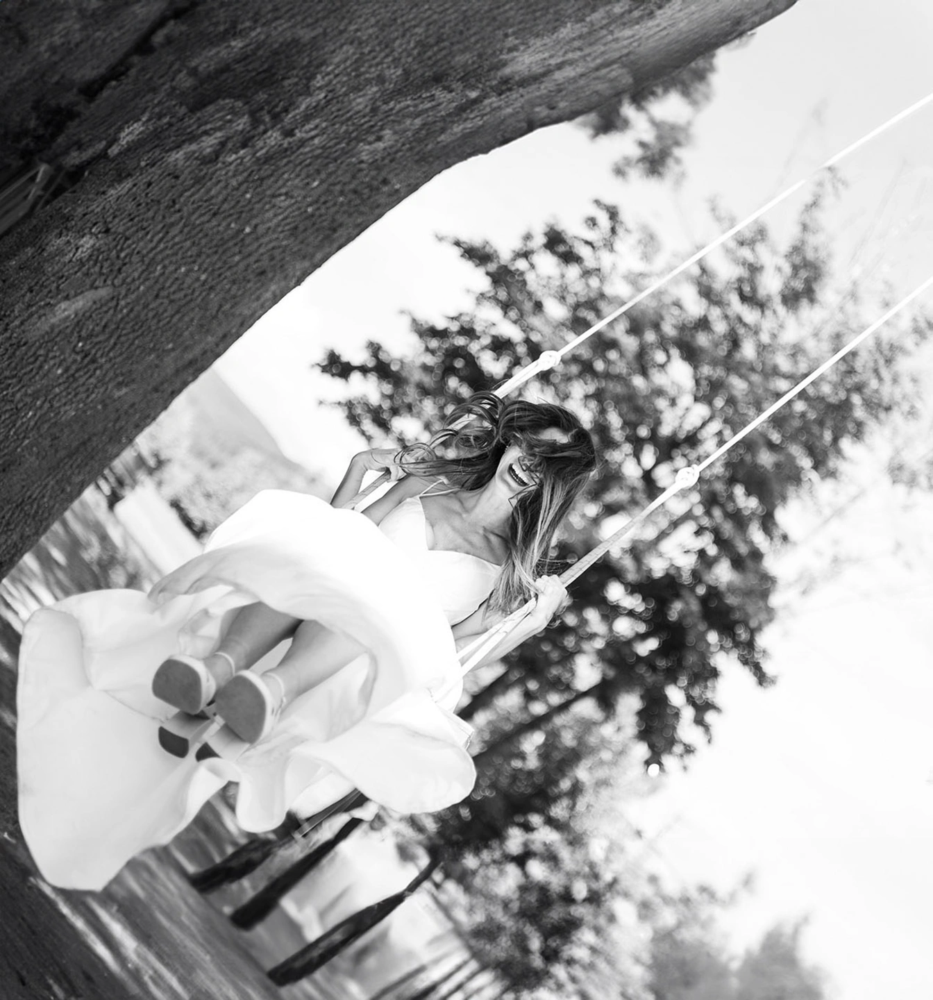

Svatby
Svatební focení
Dva rozsahy podle toho, jak dlouhý je váš den. Součástí obou je předsvatební setkání, klidná práce bez pózování a online galerie, ze které si fotografie stáhnete i sdílíte s hosty.
Celodenní focení
20 000 Kč
- předsvatební setkání
- 10 hodin focení
- min. 500 upravených fotografií
- online galerie
Půldenní focení
14 000 Kč
- předsvatební setkání
- 6 hodin focení
- min. 300 upravených fotografií
- online galerie
